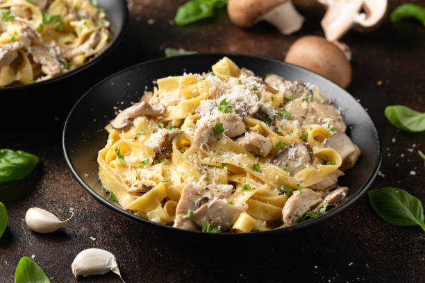

Chicken Alfredo

Chicken alfredo is a pasta dish consisting of fettucine noodles todssed in alfredo sauce and topped with sliced chicken. The sauce is typically made with butter, parmesan cheese, and heavy cream.
Ingredients
- 16 ounces fettucine noodles
- 1 pound boneless, skinless chicken breasts
- 1 teaspoon italian seasoning
- 3/4 teaspoon kosher salt
- 1/4 teaspoon pepper
- 2 tablespoons extra virgin olive oil
- 1 tablespoon butter
- 1/2 cup butter
- 2 cups heavy whipping cream
- 1 clove garlic, minced
- 3/4 teaspoon garlic powder
- 1/4 teaspoon salt
- 1/4 teaspoon pepper
- 2 cups freshly grated parmesan cheese
Steps
- Bring a large pot of water to boil. Add the noodles and cook until an dente (usually 10 min). Then drain
- Season the chicken breasts with Italian seasoning salt and pepper
- Warm the olive oil in nonstick skillet. Once it is shimmering, swirl the pan to distribute. Add the chicken and cook until the bottom is golden brown. Flip over and add in a teaspoon of butter between them. Continue cooking for another 5-7 minutes.
- Transfer chicken to cutting board and cut into desired size
- Make the sauce. In the same pan, over medium-low heat, add the butter and cream, whisk until butter has melted
- Add in minced garlic, garlic powder, italian seasoning, salt, and pepper; whisk until compined and smooth
- Bring to gentle simmer and cook for 3-4 minutes, whisking constantly.
- Stir in parmesan cheese until melted and the sauce is smooth.
- Assemble: take sauce off of the heat and immediately toss with the cooked noodles.
- Divide the pasta and top with chicken. Garnish with parsley, parmesan, and black pepper to serve.
Home